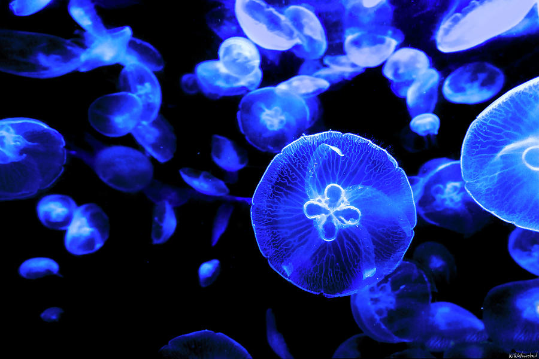

<html>

<head>

  <title>
    The Life Cycle of the Medusa
  </title>

  <link rel="stylesheet" href="style.css" />
  <link href="https://fonts.googleapis.com/css?family=Jomolhari&display=swap" rel="stylesheet">
  <script type='text/javascript' src='http://ajax.googleapis.com/ajax/libs/jquery/1.4.2/jquery.min.js'></script>
  <script src="script3.js"></script>
  <script type='text/javascript'>
    (function() {
      $(document).ready(changePage);

      function changePage() {
        if (sessionStorage.getItem("Medusa") == "visited p.5") {
          $('head').html("<head><title>Sasha's Opinion</title>" +

            '<link rel="stylesheet" href="style2.css" /><link href="https://fonts.googleapis.com/css?family=Caveat&display=swap" rel="stylesheet"></head>'
          );

          $('body').html('<center></img></center>' +
          "<center><h2> Welcome to my Blog </h2></center>" +

          '<div class = "div1"><p1>Here you will get to learn about all of my interest and opinions. I have coverd topics such as animals, beauty and even politics. I hope that along the way you will learn many new facts and information and know more about</p1></div>' +
          '<div class = "flex-container"><center><button class="button1">Plants</button><button class="button2">Animals</button><button class="button3">Art</button><button class="button4">Beauty</button><button class="button5">Travel</button><button class="button6">Dreams</button><button class="button7">Politics</button>' +
          '</center></div>'
          );

        } else {
          $('head').html('<title>The Life Cycle of the Medusa</title><link rel="stylesheet" href="style.css" /><link href="https://fonts.googleapis.com/css?family=Jomolhari&display=swap" rel="stylesheet">');
          $('body').html('</img>' +
          '<br><br><br><br><br><br>' +

          '<center><h1> The Life Cycle of the Medusa </h1></center>' +

          '<center>' +
          '<div class="div1">' +
          '<p1>' +
          'The jellyfish, also known as the medusa, is a mysterious and complex creature. Scientist are still discovering different types of jellyfish and some still debate whether the jellyfish is an animal or a plant. Today, we will explore the life cycle of the jellyfish, which is very fascinating because, not only does the jellyfish grow, but it can also go back to a previous phase. In this website, you will explore the five main stages of the creation of the jellyfish starting from the eggs and'+ ' sperm and ending at the Medusa.' +
          '</p1>' +
          '</div>' +

          '<div class="div2"> <a href="Page2.html"> <button> Begin Journey </button></a></div>'+
          "Information comes from https://www.thoughtco.com/life-cycle-of-a-jellyfish-4112280"
  );


        }
      }


    })();
  </script>
</head>

<body>
</body>
</html>


<!-- <html>

<head>

  <title>
    The Life Cycle of the Medusa
  </title> -->

  <!-- <link rel="stylesheet" href="style.css" />
  <link href="https://fonts.googleapis.com/css?family=Jomolhari&display=swap" rel="stylesheet"> -->

<!-- </head>

<body> -->
  <!-- </img>
  <br>
  <br>
  <br>
  <br>
  <br>
  <br>

  <center>
    <h1> The Life Cycle of the Medusa </h1>
  </center> -->
<!-- <script src="script.js" ></script> -->

<!-- </body>

</html>
